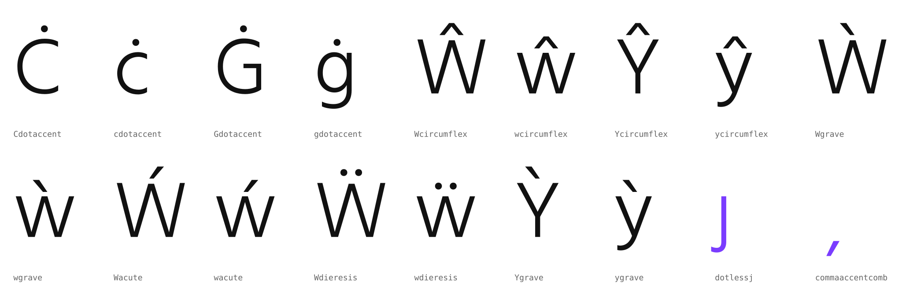
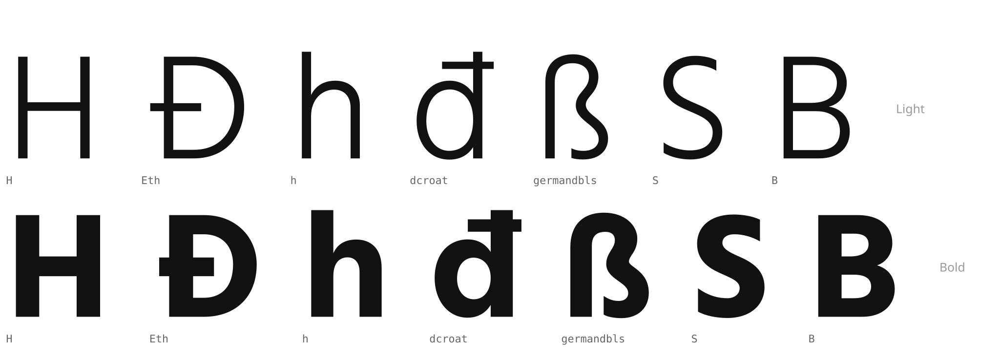
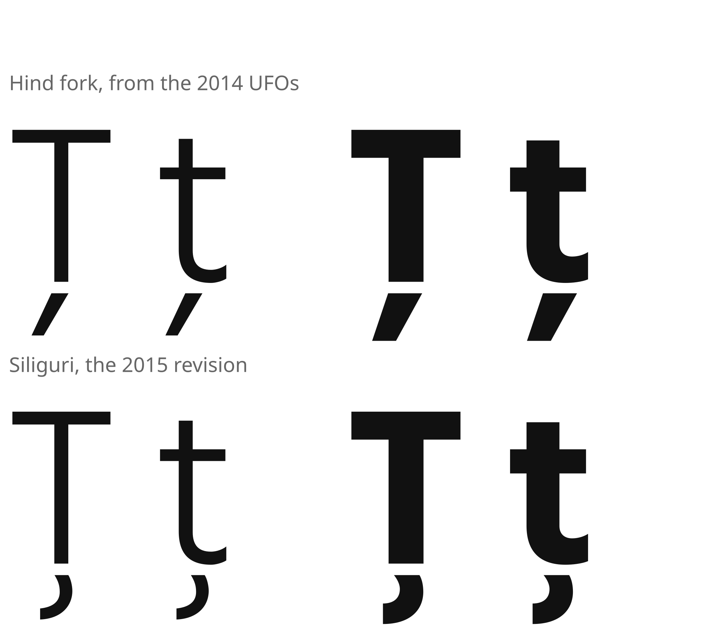

Hind Siliguri: GF Latin Core plan
Fontbakery's last FAILs are 34 missing code points: 20 Latin letters and 14 combining marks. Most of them can be built from parts the Latin already has. Three need real drawing: Ħ ħ ẞ.
No sibling has these glyphs to borrow. Hind, Hind Madurai, Hind Vadodara, Hind Guntur, and Hind Mysuru on Google Fonts all lack the same 34.
Legend: red is your drawing, green I build mechanically, violet I cut from existing outlines, and ochre is optional.
Status, 2026-10-26: the 31 are built. Ħ ħ ẞ are yours.
The 31 are in masters/HindSiliguri.glyphs, together with:
top,bottom, andogonekanchors on the Latin base letters and the dotted circle;- the
ccmprule for dotless i, j, and į; iogonek.dotless.
Fontbakery now fails only on your three glyphs.
Below, every pair is the precomposed letter and then the same letter typed as base + combining mark, from both builds.
The 34, one by one
| Glyphs | How | From |
|---|---|---|
| Ħ ħ | draw | H and h with a bar. Eth's and đ's bars show the stroke weight and the bar language already in the font. |
| ẞ | draw | Capital sharp s. The ß, S, and B below are the references. |
| Ċ ċ Ġ ġ | composite | C, c, G, g + dotaccent |
| Ŵ ŵ Ŷ ŷ | composite | W, w, Y, y + circumflex |
| Ẁ ẁ Ẃ ẃ Ẅ ẅ | composite | W, w + grave, acute, dieresis |
| Ỳ ỳ | composite | Y, y + grave |
| ȷ | derive | j without its dot |
| ș ț | derive | The comma under Ș, which is already drawn into Scommaaccent |
| ò ó ô õ ō ŏ ȯ ö o̊ ő ǒ ç ę | combining | U+0300–U+0328, shown here on a base letter. Each is a zero-width component of a spacing accent (grave to ogonek) with a _top or _bottom anchor. |
Auto-built, ready for your eye
I placed the accents with the font's own rules. I measured each accent's height, and how far acute and grave lean off center, from the 98 accented letters already in the Latin. W has no accented forms yet, so it's centered on its bounding box. Violet glyphs are outlines cut from existing glyphs.

What you'd draw: Ħ ħ ẞ
These are the glyphs already in the font that set the rules.

- Ħ: a bar across both stems, between the crossbar and the cap height. Eth's bar sets the weight, and how far it overshoots the stem.
- ħ: a bar across the ascender, matching
dcroat's. - ẞ: width and weight between ß and B.
- Both masters, compatible. Same contours, same order, and the same start node in Light and Bold. Mismatched start nodes and contour order are what broke ১, হ্র, and ল্দ্র here, so the build will scan for both.
- Draw them in
masters/HindSiliguri.glyphsasHbar,hbar, andGermandbls. I'll wire up everything else around them.
Where: Siliguri first, then Hind
You asked whether to start in Hind. I'd start here. The two forks don't carry quite the same Latin:
- Siliguri has the newer drawing. Its Latin is the October 2015 revision, from hindkit 0.3.0's
Hind.glyphs. The Hind fork's comes from the 2014 UFOs. In 2015, ITF corrected Ţ ţ from a comma below (the Romanian form, wrong for these code points) to a real cedilla. - Siliguri's masters are compatible. About a dozen glyphs (e, g, n, æ, X, <, ≤, the braces) have mismatched contours between Hind's masters and match here.
- The checks run here. This repo already builds with gftools and passes fontbakery apart from these 34.
Then a variant of toolchain/merge_latin_into_glyphs.py carries the whole Latin into Hind.glyphs: the 2015 fixes plus the new glyphs. After that, the other four families take the same Latin unchanged.

Ţ ţ, Light and Bold. The other differences are in contour order only and don't show.
What I'd do around your drawing
- Add the 16 composites as components, at the placements above, with your corrections. Add dotless ȷ and the combining comma as outlines.
- Give the base letters
topandbottomanchors in both masters. The anchor positions follow from the accented letters already in the font, so ufo2ft (and hindkit) generatemarkpositioning for decomposed text, such as e followed by U+0301. - Add the 13 combining marks as zero-width components of the spacing accents, with matching
_topand_bottomanchors and the Mark category. - Add a small
ccmprule: i and j become dotless before a mark above (Lithuanian, Dutch íj́). - Update the GOADB, rebuild with hindkit and gftools, and rerun fontbakery. Check composed against decomposed text in a rendered proof.
- Port the Latin to Hind and re-verify it against the 2014 OTFs.
Optional: fontbakery's WARN tier
These are auxiliary characters for the same languages. They only warn, so they can wait:
| Ĕ ĕ Ĭ ĭ Ŏ ŏ Ŭ ŭ Ǔ ǔ Ĩ ĩ Ẽ ẽ Ŝ ŝ Ǧ ǧ Ǩ ǩ Ȟ ȟ Ǿ ǿ Ŀ ŀ | composite | Existing letters and accents. Ŀ ŀ use periodcentered. |
| Ŧ ŧ Ǥ ǥ | draw | The same bar job as Ħ ħ. |
| ſ Ŋ ŋ Ʒ ʒ ʻ | draw | New letterforms. Ǯ ǯ then follow as Ʒ ʒ + caron. |
Your calls
1. Siliguri first, then Hind?
I recommend it, for the reasons above. Starting in Hind would mean first replacing Hind's 2014 Latin with the 2015 revision anyway.
2. Required 34 only, or the WARN tier too?
The 34 clear fontbakery's FAILs. The WARN tier adds 26 composites and 10 glyphs you'd draw.
3. The auto placements
Flag any accent position above that looks off. W's accents and Ċ's dot are the ones I'd check first.